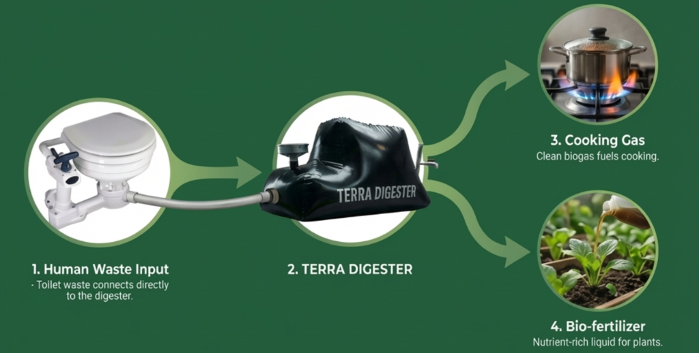

Assainissement sans infrastructure
Assainissement biologique conçu pour communautés hors réseau, écotourisme et installations temporaires — seulement 1,2 L par chasse, aucun réseau d’égouts, aucune arrivée d’eau requise.
Demander des infos sur les bio-toilettes
Un déficit sanitaire mondial
Les systèmes d’égouts conventionnels exigent une consommation d’eau substantielle et d’importants investissements en infrastructure — des ressources qui restent indisponibles pour des milliards de personnes et d’innombrables sites temporaires ou isolés.
- Selon les données de l’OMS, environ 3,6 milliards de personnes n’ont pas accès à un assainissement géré de manière sûre.
- Les toilettes à chasse conventionnelles nécessitent entre 6 et 13 litres d’eau potable par utilisation — une charge significative dans les contextes de rareté d’eau.
- Les événements temporaires, chantiers de construction, réserves naturelles et situations d’urgence nécessitent des solutions d’assainissement déployables sans infrastructure fixe.
- La défécation à l’air libre et les déchets mal gérés présentent de sérieux risques sanitaires et environnementaux dans les zones sous-desservies.
Des déchets à l’énergie propre
Quatre étapes. Un système étanche. Seulement 1,2 L par chasse — aucun réseau d’égouts, aucune arrivée d’eau. Production quotidienne de biogaz et de biofertilisant.
Quatre étapes. Un système étanche. Production quotidienne d’énergie et de fertilisant.
Waste Input
Chasse ultra-faible : seulement 1,2 L. Aucune arrivée d’eau requise. Prêt pour le hors réseau.
Anaerobic Digestion
Chambre étanche. Rétention de 15 à 30 jours. Les bactéries convertissent les déchets en biogaz.
Cooking Gas
Biogaz riche en méthane acheminé vers le réchaud. Sans fumée. Remplace le GPL.
Bio-fertiliser
Digestat liquide produit chaque jour. Riche en N·P·K. Fertilisant organique gratuit.
Déchets humains directement raccordés
La bio-toilette se raccorde au Terra Digester via une canalisation étanche. Chaque chasse n’utilise que 1,2 L — aucune arrivée d’eau ni réseau d’égouts n’est requis. L’eau peut provenir d’un seau, d’une bassine ou d’eaux grises recyclées (par exemple, eau de lavage). Une pompe à pied ou à main génère la pression. Aucune électricité requise.
La digestion anaérobie décompose tout
À l’intérieur de la poche étanche du Terra Digester, des bactéries anaérobies naturellement présentes décomposent les déchets humains dans un environnement totalement exempt d’oxygène. Sur une période de rétention de 15 à 30 jours, les micro-organismes convertissent la matière organique en biogaz riche en méthane (CH₄) qui monte vers le haut, et en digestat riche en nutriments qui se dépose en dessous. Les agents pathogènes sont considérablement réduits pendant ce processus.
Gaz de cuisson propre
Le biogaz riche en méthane monte au sommet de la poche étanche du Terra Digester et est acheminé directement vers un réchaud de cuisine par une simple conduite de gaz. Il brûle avec une flamme bleue propre — totalement sans fumée et inodore, remplaçant les bonbonnes de GPL coûteuses ou le bois de chauffe nocif. Un seul système de bio-toilette peut générer un combustible de cuisson quotidien significatif pour un ménage ou une petite communauté.
Biofertilisant riche en nutriments
Au fur et à mesure que le cycle de digestion s’achève, le digestat liquide s’écoule du robinet de sortie — un biofertilisant riche en nutriments contenant azote, phosphore et potassium. Appliqué directement sur plates-bandes, champs ou arbres, ce flux quotidien entièrement gratuit remplace les engrais chimiques coûteux et boucle le cycle organique. Rien ne se perd ; tout devient une ressource.
Conçu pour
Trois contextes principaux où l’assainissement conventionnel échoue — et où les systèmes bio-toilette sont conçus pour fonctionner.
Communautés isolées & rurales
Les communautés en périphérie urbaine, zones rurales et régions sans infrastructure d’égouts municipaux peuvent accéder à un assainissement sûr et digne sans attendre le raccordement au réseau. Les systèmes sont configurés pour un déploiement à l’échelle communautaire avec plusieurs unités.
Écotourisme & réserves naturelles
Les sites de tourisme durable — réserves animalières, lodges en pleine nature, parcs nationaux et éco-resorts côtiers — bénéficient d’un assainissement qui ne compromet pas leurs credentials environnementaux et ne perturbe pas les écosystèmes naturels par des infrastructures.
Installations temporaires & mobiles
Les chantiers de construction, festivals en plein air, camps de réponse humanitaire et lieux événementiels temporaires nécessitent un assainissement rapidement déployable, fonctionnant sans infrastructure et relocalisable selon les besoins.
Conçu pour réduire la charge environnementale
Nos systèmes sont conçus pour offrir des résultats environnementaux significatifs selon trois dimensions clés.
Conservation de l’eau
Chaque unité est conçue pour éliminer entièrement la consommation d’eau de chasse. Dans les régions où l’eau est rare ou son accès difficile, cela représente un avantage opérationnel et ressource significatif.
Capture du méthane
En capturant le méthane généré lors de la digestion anaérobie, nos systèmes empêchent sa libération atmosphérique directe — convertissant un gaz à effet de serre puissant en une source d’énergie contenue et potentiellement utilisable.
Gestion des agents pathogènes
La digestion anaérobie, lorsqu’elle fonctionne sur une période de rétention adéquate, est conçue pour obtenir des réductions significatives de la charge pathogène — diminuant les risques sanitaires liés à l’exposition aux déchets à l’air libre.
Remarque : les résultats de performance sont décrits en termes de « conçu pour atteindre ». Les résultats réels dépendent du contexte d’installation, des modes d’usage et de la maintenance. Des données de performance détaillées sont disponibles sur demande.
Questions fréquentes
Tout ce que vous devez savoir sur le système de bio-toilette Terra Digester.
La bio-toilette n’utilise que 1,2 L par chasse — environ 1/6 d’une toilette classique — pour acheminer les déchets via une canalisation étanche vers le Terra Digester. Des bactéries anaérobies décomposent les déchets sur 15 à 30 jours, produisant du biogaz pour la cuisson et du digestat liquide pour le sol. Aucun raccordement aux égouts ni arrivée d’eau requis.
Non. Le système est entièrement autonome — aucune infrastructure d’égouts municipaux, de fosse septique ou de drainage n’est requise. Il est ainsi idéal pour les sites hors réseau, lodges d’écotourisme, communautés isolées et camps humanitaires.
Non. L’environnement étanche et exempt d’oxygène élimine totalement les odeurs. Contrairement aux toilettes à compostage, il n’y a aucune odeur en fonctionnement normal — ce qui le rend confortable pour un usage intérieur ou semi-intérieur. Toute odeur est un signe clair de problème d’étanchéité, facile à résoudre.
Seulement 1,2 litre par chasse — environ 1/6 des 6 à 13 L d’une toilette classique. Aucune arrivée d’eau sous pression n’est nécessaire : un seau, une bassine ou des eaux grises recyclées fonctionnent parfaitement. Une pompe à pied ou à main génère la pression. Aucune électricité requise.
Oui. L’unité de toilette peut être placée à l’intérieur tant que la canalisation vers le digesteur extérieur ne dépasse pas environ 5 m au même niveau, ou jusqu’à 10 m si la toilette est surélevée de 1 m au-dessus du digesteur. Une courte cheminée de ventilation (90 mm, max 2 m) évacue l’air résiduel.
Évitez les grandes quantités — cela ralentit la digestion et peut obstruer l’entrée. Du papier fin, non blanchi, en petites quantités convient généralement. Nous recommandons d’examiner votre installation spécifique avec nous pour trouver la meilleure configuration d’entrée.
Utilisez uniquement de l’eau, du vinaigre ou des nettoyants biologiques éco-certifiés. L’eau de javel, les sprays antibactériens et les désinfectants chimiques tuent les bactéries anaérobies et stoppent le processus. Gardez l’entretien simple et naturel.
Le digestat s’écoule en continu vers un bassin de paillage, un champ de drainage, ou est géré selon la réglementation locale. Il favorise la santé du sol et réduit significativement les agents pathogènes par digestion anaérobie. Ne pas appliquer directement sur des plantes comestibles sans traitement supplémentaire ou avis local.
Le système fonctionne à partir d’environ 5 °C (41 °F), bien que la production de biogaz soit optimale au-dessus de 21 °C (70 °F). Évitez les gels sévères. Dans les régions plus froides, isoler la poche du digesteur et la placer dans un endroit abrité maintient des performances stables toute l’année.
Oui. Le biogaz est stocké à très basse pression, non comprimé — en cas de fuite, il monte et se disperse en toute sécurité vers le haut. La conception du système répond aux normes internationales de sécurité sur le biogaz. Chaque installation est finalisée par un contrôle de mise en service garantissant l’étanchéité des joints et raccordements.
Discuter d’une solution bio-toilette
Que ce soit pour une communauté isolée, un site d’écotourisme ou une installation temporaire, nous pouvons vous aider à concevoir l’approche d’assainissement adaptée.
Démarrer une conversation